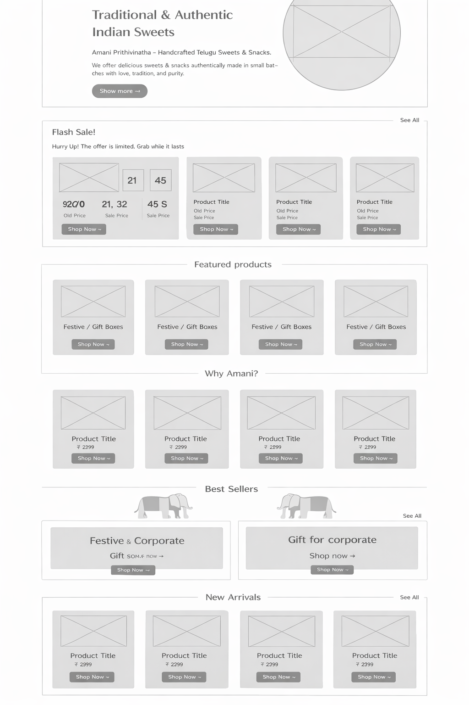
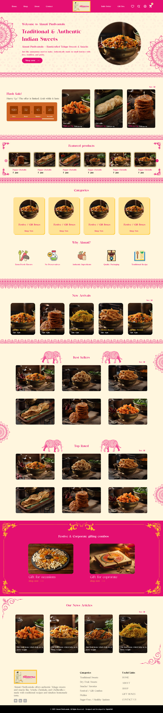
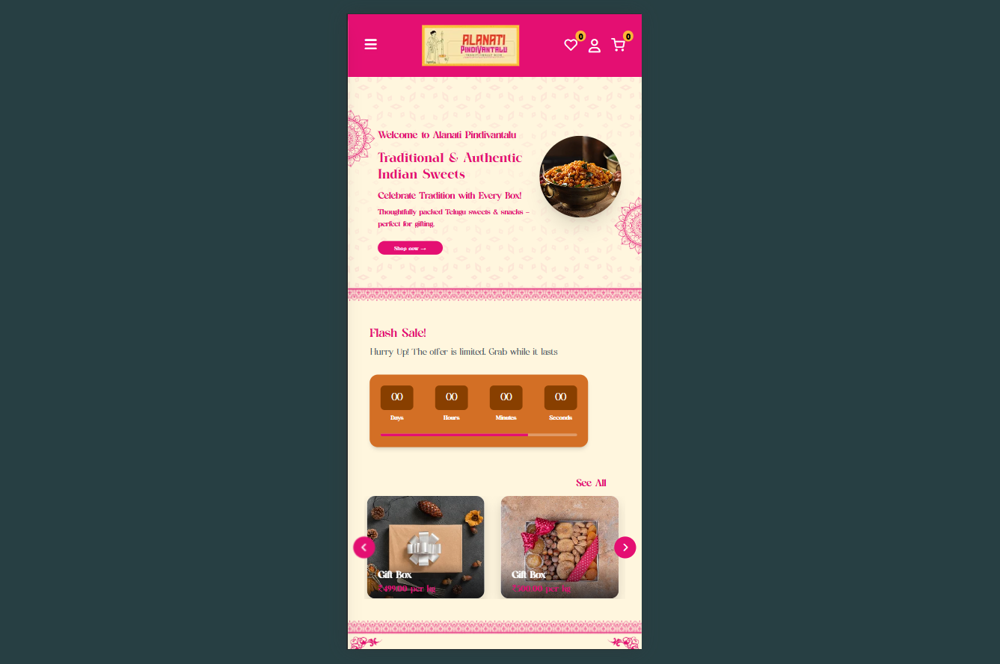

Alanati Pindivantalu is an authentic heritage brand dedicated to bringing traditional, homestyle Telugu sweets and snacks of Andhra Pradesh and Telangana to food lovers worldwide. Rooted in traditional culinary craftsmanship, the brand is loved for preserving grandmother-approved recipes.
We were tasked with designing a digital flagship platform that translates this warm, authentic heritage into a scalable D2C e-commerce experience. The goal was to build a system that feels culturally warm, evokes nostalgic flavors, and facilitates seamless shopping journeys across both mobile and desktop.
Translating a highly sensory, offline buying habit into a sterile digital interface presented unique challenges:
- Cultural Warmth vs. Modern UI Frameworks: Traditional food businesses rely heavily on physical trust. The platform had to capture the warmth of rural kitchens without looking cluttered or archaic.
- High Checkout Abandonment Rates: The legacy ordering system was linear and required immediate profile registration, adding heavy friction for quick impulse buyers.
- Cluttered Mobile Discovery: Over 75% of users shop on mobile, yet the old catalog made finding specific items (like sugar-free ghee sweets vs. dry hot savories) incredibly exhausting.
- Rigid Gifting Customization: Festivals drive high demand for custom assorted boxes, but customers lacked visual builders to compile their own sweet selections.
- Complex Product Attributes: Varying weight options, preparation styles (organic jaggery vs. sugar), and limited shelf lives were hidden in long textual descriptions.
We began by immersing ourselves in the traditional Telugu culinary ecosystem to discover design patterns that inspire trust and evoke nostalgia.
We carried out collaborative workshops with local sweet connoisseurs and conducted remote user interviews with the Telugu diaspora in the US and UK. Parallelly, we conducted a rigorous Jakob Nielsen heuristic audit on existing sweets platforms to identify common friction loops.
Key Discovery Takeaways
- Establish visual sensory trust: High-definition photography focused on rich textures and warm colors (brass, clay, mango leaves) immediately triggers appetite and nostalgic delight.
- Curation over massive lists: Users want to filter quickly by preparation style (Ghee, Oil, Sugar-Free, Jaggery-Based) rather than scanning hundreds of random items.
- Tactile Gifting Flows: Assorted box builders should visually mimic placing physical sweets into dedicated partition boxes.
- Friction-free Mobile Cart: Slide-out cart drawers with integrated delivery timeline estimates reduce conversion friction during impulse browsing.

Success rested on establishing a clean design direction that bridges heritage authenticity with sleek modern conversion tactics. We formulated five visual and interaction design anchors:
- Saffron & Terracotta Visual Guidelines: Establishing color systems that mimic copper utensils, organic packaging clay, and warm saffron spices.
- Smarter Category Architecture: Categorizing items cleanly into Sweets (Ghee/Oil/Sugar-Free) and Savories (Spicy/Mild) for effortless navigation.
- Tactile Sweet Box Builders: Empowering customers to select box sizes (500g, 1kg) and visual stepper slots to build custom assorted sweet boxes.
- Frictionless Cart drawers: Designing a micro-cart drawer that lets users review, scale quantities, and add gift wraps without leaving the shopping grid.
- Mobile-First Ergonomics: Optimizing visual tap sizes, bottom filters, and swipe controls for seamless phone browsing.
We established an elegant typography system using a classic serif header font (Cormorant Garamond) for premium heritage value, paired with a geometric sans-serif (DM Sans) for legible transaction grids.
We built interactive UI blueprints, mapping structural grids, ingredient hierarchies, and checkout forms prior to high-fidelity assembly.
We subjected our high-fidelity prototypes to quick usability testing rounds with a mixed user demographic, including local snack buyers and international Telugu diaspora:
- Category Confusion: Testing revealed that users found generic lists confusing. We redesigned the shop grid with persistent filtering buttons to isolate oil sweets from ghee sweets instantly.
- Registration Fatigue: Drop-off was high during mandatory logins. We introduced a simplified Guest Checkout stream with absolute visual progress bars, resulting in smooth click-throughs.
- Custom Hamper builder: The initial drag-and-drop builder was unstable on mobile viewports. We refactored it into an interactive slot-counter stepper that was incredibly comfortable for fingers.
Heritage Homepage Experience
We designed the landing experience to function as a warm invitation. The layout combines high-contrast photography of fresh sweets with organic terracotta backdrops. A highly clean, minimal navigation path enables immediate access to categories, reducing user search efforts.

Custom Assorted Hamper Builder
To tackle rigid gifting restrictions, we built an interactive visual Box Builder. Users can select box sizes (e.g. 500g, 1kg) and seamlessly allocate slots to various sweets or savories. A dynamic indicator alerts users how much capacity remains in the current hamper.

Ergonomic Mobile Redesign
Recognizing that 75%+ traffic originates on mobile phones, we carefully configured every design block for comfortable thumbs. Bottom sheets house advanced filters, category pills slide smoothly on touch swiping, and product grid cells adjust to secure maximum visual balance.

Conclusion
Through a structured, user-centered redesign strategy, we successfully converted a legacy sweet-ordering portal into a premium, high-converting D2C ecosystem. By establishing trust through beautiful cultural storytelling and stripping friction out of mobile checkout flows, we bridged authentic Telugu heritage with modern web design standards.
What did we achieve from the project?
The redesign dramatically impacted business performance and customer satisfaction metrics:
- +40% Checkout Conversion Rate Stripping mandatory profile registrations and introducing a 3-step checkout funnel resolved top drop-offs.
- +28% Average Order Value (AOV) The festive assorted Hamper Builder motivated users to fill complete box sets, lifting average buying volumes.
- -35% Mobile Cart Abandonment A highly responsive drawer cart kept item balances clear, enabling impulse shopping on compact viewport screens.